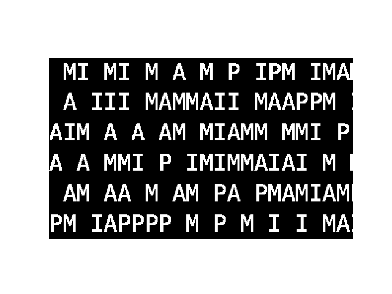
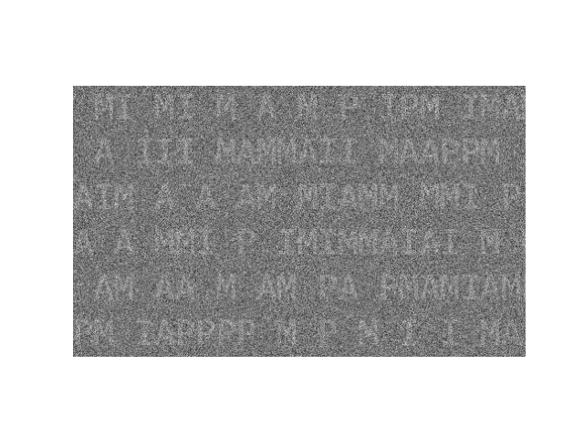
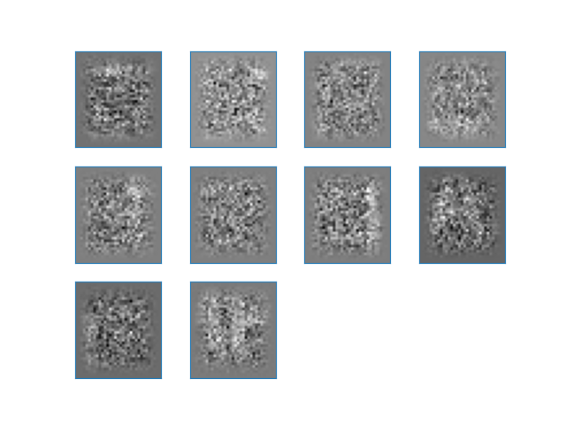
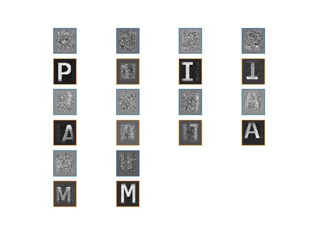

Note
Click here to download the full example code
DiCoDiLe on text images¶
This example illustrates pattern recovery on a noisy text image using DiCoDiLe algorithm.
import matplotlib.pyplot as plt
import numpy as np
from dicodile import dicodile
from dicodile.data.images import fetch_letters_pami
from dicodile.update_d.update_d import tukey_window
from dicodile.utils.csc import reconstruct
from dicodile.utils.dictionary import init_dictionary
from dicodile.utils.viz import display_dictionaries
We will first load PAMI image generated from a text of 5000 characters drawn uniformly from the 4 letters P A M I and 2 whitespaces and assign it to X.
We will also load the images of the four characters used to generate X and assign it to variable D.
X_original, D = fetch_letters_pami()
Out:
Downloading data from https://s3-eu-west-1.amazonaws.com/pfigshare-u-files/26750168/text_4_5000_PAMI.npz (17.8 MB)
file_sizes: 0%| | 0.00/18.6M [00:00<?, ?B/s]
file_sizes: 0%| | 65.5k/18.6M [00:00<00:50, 368kB/s]
file_sizes: 1%|2 | 197k/18.6M [00:00<00:31, 587kB/s]
file_sizes: 4%|#1 | 786k/18.6M [00:00<00:09, 1.83MB/s]
file_sizes: 17%|####3 | 3.15M/18.6M [00:00<00:02, 6.31MB/s]
file_sizes: 45%|###########7 | 8.39M/18.6M [00:00<00:00, 14.6MB/s]
file_sizes: 79%|####################5 | 14.7M/18.6M [00:01<00:00, 21.3MB/s]
file_sizes: 100%|##########################| 18.6M/18.6M [00:01<00:00, 15.9MB/s]
Successfully downloaded file to /github/home/data/dicodile/images/text/text_4_5000_PAMI.npz
We will work on the copy X of the original image and we need to reshape image data X to fit to the expected signal shape of dicodile:
(n_channels, *sig_support)
Out:
(1, 2321, 2004)
Reshape D to fit to dictionary format:
(n_atoms, n_channels, *atom_support)
Out:
(4, 1, 37, 33)
Let’s display an extract of the original text image X_original and all the images of characters from D.
zoom_x = X_original[190:490, 250:750]
plt.axis('off')
plt.imshow(zoom_x, cmap='gray')
display_dictionaries(D)
- 
Out:
<Figure size 640x480 with 4 Axes>
We add some Gaussian white noise with standard deviation std 3 times larger than X.std to X.
We will create a random dictionary of K = 10 patches from the noisy image.
# set number of patches
n_atoms = 10
# set individual atom (patch) size
atom_support = np.array(D.shape[-2:])
D_init = init_dictionary(X, n_atoms=n_atoms, atom_support=atom_support,
random_state=60)
# window the dictionary, this helps make sure that the border values are 0
atom_support = D_init.shape[-2:]
tw = tukey_window(atom_support)[None, None]
D_init *= tw
print(D_init.shape)
Out:
(10, 1, 37, 33)
Let’s display an extract of noisy X and random dictionary D_init generated from X.
- 
- 
Out:
<Figure size 640x480 with 12 Axes>
Set model parameters.
# regularization parameter
reg = .2
# maximum number of iterations
n_iter = 100
# when True, makes sure that the borders of the atoms are 0
window = True
# when True, requires all activations Z to be positive
z_positive = True
# number of workers to be used for computations
n_workers = 10
# number of jobs per row
w_world = 'auto'
# tolerance for minimal update size
tol = 1e-3
Fit the dictionary with dicodile.
Out:
[DEBUG:DICODILE] Lambda_max = 24.595986354863822
Started 10 workers in 5.58s
[INFO:DICODILE] - CD iterations 0 / 100 (0s)
[DEBUG:DICODILE] lambda = 4.919e+00
[INFO:DICOD-10] converged in 5.500s (4.345s) with 28958 iterations (4598 updates).
[DEBUG:DICODILE] Objective (z) : 3.325e+06 (10s)
[PROGRESS:Update D] 3s - 1.00% iterations (2.642e+00)
[PROGRESS:Update D] 8s - 2.00% iterations (2.175e-03)
[PROGRESS:Update D] 9s - 3.00% iterations (1.082e-03)
[PROGRESS:Update D] 10s - 4.00% iterations (1.082e-03)
[PROGRESS:Update D] 11s - 5.00% iterations (1.082e-03)
[PROGRESS:Update D] 12s - 6.00% iterations (1.082e-03)
[PROGRESS:Update D] 13s - 7.00% iterations (1.082e-03)
[PROGRESS:Update D] 14s - 8.00% iterations (1.082e-03)
[PROGRESS:Update D] 14s - 9.00% iterations (1.082e-03)
[PROGRESS:Update D] 15s - 10.00% iterations (1.082e-03)
[PROGRESS:Update D] 16s - 11.00% iterations (1.082e-03)
[PROGRESS:Update D] 17s - 12.00% iterations (1.082e-03)
[PROGRESS:Update D] 18s - 13.00% iterations (1.082e-03)
[PROGRESS:Update D] 19s - 14.00% iterations (1.082e-03)
[PROGRESS:Update D] 20s - 15.00% iterations (1.082e-03)
[PROGRESS:Update D] 20s - 16.00% iterations (1.082e-03)
[PROGRESS:Update D] 21s - 17.00% iterations (1.082e-03)
[PROGRESS:Update D] 22s - 18.00% iterations (1.082e-03)
[PROGRESS:Update D] 23s - 19.00% iterations (1.082e-03)
[PROGRESS:Update D] 24s - 20.00% iterations (1.082e-03)
[PROGRESS:Update D] 25s - 21.00% iterations (1.082e-03)
[PROGRESS:Update D] 26s - 22.00% iterations (1.082e-03)
[PROGRESS:Update D] 26s - 23.00% iterations (1.082e-03)
[PROGRESS:Update D] 27s - 24.00% iterations (1.082e-03)
[PROGRESS:Update D] 28s - 25.00% iterations (1.082e-03)
[PROGRESS:Update D] 29s - 26.00% iterations (1.082e-03)
[PROGRESS:Update D] 30s - 27.00% iterations (1.082e-03)
[PROGRESS:Update D] 31s - 28.00% iterations (1.082e-03)
[PROGRESS:Update D] 31s - 29.00% iterations (1.082e-03)
[PROGRESS:Update D] 32s - 30.00% iterations (1.082e-03)
[PROGRESS:Update D] 33s - 31.00% iterations (1.082e-03)
[PROGRESS:Update D] 34s - 32.00% iterations (1.082e-03)
[PROGRESS:Update D] 35s - 33.00% iterations (1.082e-03)
[PROGRESS:Update D] 36s - 34.00% iterations (1.082e-03)
[PROGRESS:Update D] 36s - 35.00% iterations (1.082e-03)
[PROGRESS:Update D] 37s - 36.00% iterations (1.082e-03)
[PROGRESS:Update D] 38s - 37.00% iterations (1.082e-03)
[PROGRESS:Update D] 39s - 38.00% iterations (1.082e-03)
[PROGRESS:Update D] 40s - 39.00% iterations (1.082e-03)
[PROGRESS:Update D] 41s - 40.00% iterations (1.082e-03)
[PROGRESS:Update D] 42s - 41.00% iterations (1.082e-03)
[PROGRESS:Update D] 42s - 42.00% iterations (1.082e-03)
[PROGRESS:Update D] 43s - 43.00% iterations (1.082e-03)
[PROGRESS:Update D] 44s - 44.00% iterations (1.082e-03)
[PROGRESS:Update D] 45s - 45.00% iterations (1.082e-03)
[PROGRESS:Update D] 46s - 46.00% iterations (1.082e-03)
[PROGRESS:Update D] 46s - 47.00% iterations (1.082e-03)
[PROGRESS:Update D] 47s - 48.00% iterations (1.082e-03)
[PROGRESS:Update D] 48s - 49.00% iterations (1.082e-03)
[PROGRESS:Update D] 49s - 50.00% iterations (1.082e-03)
[PROGRESS:Update D] 50s - 51.00% iterations (1.082e-03)
[PROGRESS:Update D] 51s - 52.00% iterations (1.082e-03)
[PROGRESS:Update D] 52s - 53.00% iterations (1.082e-03)
[PROGRESS:Update D] 52s - 54.00% iterations (1.082e-03)
[PROGRESS:Update D] 53s - 55.00% iterations (1.082e-03)
[PROGRESS:Update D] 54s - 56.00% iterations (1.082e-03)
[PROGRESS:Update D] 55s - 57.00% iterations (1.082e-03)
[PROGRESS:Update D] 56s - 58.00% iterations (1.082e-03)
[PROGRESS:Update D] 57s - 59.00% iterations (1.082e-03)
[PROGRESS:Update D] 57s - 60.00% iterations (1.082e-03)
[PROGRESS:Update D] 58s - 61.00% iterations (1.082e-03)
[PROGRESS:Update D] 59s - 62.00% iterations (1.082e-03)
[PROGRESS:Update D] 60s - 63.00% iterations (1.082e-03)
[PROGRESS:Update D] 61s - 64.00% iterations (1.082e-03)
[PROGRESS:Update D] 62s - 65.00% iterations (1.082e-03)
[PROGRESS:Update D] 62s - 66.00% iterations (1.082e-03)
[PROGRESS:Update D] 63s - 67.00% iterations (1.082e-03)
[PROGRESS:Update D] 64s - 68.00% iterations (1.082e-03)
[PROGRESS:Update D] 65s - 69.00% iterations (1.082e-03)
[PROGRESS:Update D] 66s - 70.00% iterations (1.082e-03)
[PROGRESS:Update D] 67s - 71.00% iterations (1.082e-03)
[PROGRESS:Update D] 68s - 72.00% iterations (1.082e-03)
[PROGRESS:Update D] 68s - 73.00% iterations (1.082e-03)
[PROGRESS:Update D] 69s - 74.00% iterations (1.082e-03)
[PROGRESS:Update D] 70s - 75.00% iterations (1.082e-03)
[PROGRESS:Update D] 71s - 76.00% iterations (1.082e-03)
[PROGRESS:Update D] 72s - 77.00% iterations (1.082e-03)
[PROGRESS:Update D] 73s - 78.00% iterations (1.082e-03)
[PROGRESS:Update D] 73s - 79.00% iterations (1.082e-03)
[PROGRESS:Update D] 74s - 80.00% iterations (1.082e-03)
[PROGRESS:Update D] 75s - 81.00% iterations (1.082e-03)
[PROGRESS:Update D] 76s - 82.00% iterations (1.082e-03)
[PROGRESS:Update D] 77s - 83.00% iterations (1.082e-03)
[PROGRESS:Update D] 78s - 84.00% iterations (1.082e-03)
[PROGRESS:Update D] 78s - 85.00% iterations (1.082e-03)
[PROGRESS:Update D] 79s - 86.00% iterations (1.082e-03)
[PROGRESS:Update D] 80s - 87.00% iterations (1.082e-03)
[PROGRESS:Update D] 81s - 88.00% iterations (1.082e-03)
[PROGRESS:Update D] 82s - 89.00% iterations (1.082e-03)
[PROGRESS:Update D] 83s - 90.00% iterations (1.082e-03)
[PROGRESS:Update D] 84s - 91.00% iterations (1.082e-03)
[PROGRESS:Update D] 84s - 92.00% iterations (1.082e-03)
[PROGRESS:Update D] 85s - 93.00% iterations (1.082e-03)
[PROGRESS:Update D] 86s - 94.00% iterations (1.082e-03)
[PROGRESS:Update D] 87s - 95.00% iterations (1.082e-03)
[PROGRESS:Update D] 88s - 96.00% iterations (1.082e-03)
[PROGRESS:Update D] 89s - 97.00% iterations (1.082e-03)
[PROGRESS:Update D] 90s - 98.00% iterations (1.082e-03)
[PROGRESS:Update D] 90s - 99.00% iterations (1.082e-03)
[INFO:Update D] update did not converge
[INFO:Update D]: 100 iterations
[DEBUG:DICODILE] Objective (d) : 3.310e+06 (96s)
[INFO:DICODILE] - CD iterations 1 / 100 (115s)
[DEBUG:DICODILE] lambda = 4.919e+00
[INFO:DICOD-10] converged in 81.541s (68.672s) with 99990 iterations (92237 updates).
[DEBUG:DICODILE] Objective (z) : 3.236e+06 (90s)
[PROGRESS:Update D] 3s - 1.00% iterations (2.859e-03)
[PROGRESS:Update D] 4s - 2.00% iterations (1.429e-03)
[PROGRESS:Update D] 6s - 3.00% iterations (3.021e-04)
[PROGRESS:Update D] 7s - 4.00% iterations (1.510e-04)
[PROGRESS:Update D] 8s - 5.00% iterations (1.510e-04)
[PROGRESS:Update D] 9s - 6.00% iterations (1.510e-04)
[PROGRESS:Update D] 10s - 7.00% iterations (7.551e-05)
[PROGRESS:Update D] 11s - 8.00% iterations (7.551e-05)
[PROGRESS:Update D] 12s - 9.00% iterations (7.551e-05)
[PROGRESS:Update D] 13s - 10.00% iterations (7.551e-05)
[PROGRESS:Update D] 14s - 11.00% iterations (7.551e-05)
[PROGRESS:Update D] 14s - 12.00% iterations (7.551e-05)
[PROGRESS:Update D] 15s - 13.00% iterations (7.551e-05)
[PROGRESS:Update D] 17s - 14.00% iterations (3.776e-05)
[PROGRESS:Update D] 17s - 15.00% iterations (3.776e-05)
[PROGRESS:Update D] 19s - 16.00% iterations (1.888e-05)
[PROGRESS:Update D] 20s - 17.00% iterations (9.439e-06)
[INFO:Update D]: 18 iterations
[DEBUG:DICODILE] Objective (d) : 3.233e+06 (36s)
[INFO:DICODILE] - CD iterations 2 / 100 (250s)
[DEBUG:DICODILE] lambda = 4.919e+00
[INFO:DICOD-10] converged in 81.052s (67.405s) with 99990 iterations (90377 updates).
[DEBUG:DICODILE] Objective (z) : 3.221e+06 (91s)
[PROGRESS:Update D] 5s - 1.00% iterations (4.127e-02)
[PROGRESS:Update D] 7s - 2.00% iterations (8.722e-03)
[PROGRESS:Update D] 9s - 3.00% iterations (9.216e-04)
[PROGRESS:Update D] 11s - 4.00% iterations (1.947e-04)
[PROGRESS:Update D] 12s - 5.00% iterations (9.729e-05)
[PROGRESS:Update D] 13s - 6.00% iterations (9.729e-05)
[PROGRESS:Update D] 14s - 7.00% iterations (4.863e-05)
[PROGRESS:Update D] 15s - 8.00% iterations (4.863e-05)
[PROGRESS:Update D] 16s - 9.00% iterations (4.863e-05)
[PROGRESS:Update D] 17s - 10.00% iterations (4.863e-05)
[PROGRESS:Update D] 18s - 11.00% iterations (2.432e-05)
[PROGRESS:Update D] 19s - 12.00% iterations (2.432e-05)
[PROGRESS:Update D] 21s - 13.00% iterations (1.285e-06)
[INFO:Update D]: 14 iterations
[DEBUG:DICODILE] Objective (d) : 3.214e+06 (37s)
[INFO:DICODILE] - CD iterations 3 / 100 (387s)
[DEBUG:DICODILE] lambda = 4.919e+00
[INFO:DICOD-10] converged in 81.160s (68.836s) with 99990 iterations (90207 updates).
[DEBUG:DICODILE] Objective (z) : 3.201e+06 (93s)
[PROGRESS:Update D] 5s - 1.00% iterations (4.127e-02)
[PROGRESS:Update D] 7s - 2.00% iterations (8.722e-03)
[PROGRESS:Update D] 11s - 3.00% iterations (1.149e-04)
[PROGRESS:Update D] 11s - 4.00% iterations (1.149e-04)
[PROGRESS:Update D] 13s - 5.00% iterations (5.728e-05)
[PROGRESS:Update D] 14s - 6.00% iterations (5.728e-05)
[PROGRESS:Update D] 14s - 7.00% iterations (5.728e-05)
[PROGRESS:Update D] 15s - 8.00% iterations (5.728e-05)
[PROGRESS:Update D] 16s - 9.00% iterations (2.864e-05)
[PROGRESS:Update D] 17s - 10.00% iterations (2.864e-05)
[PROGRESS:Update D] 18s - 11.00% iterations (2.864e-05)
[PROGRESS:Update D] 19s - 12.00% iterations (2.864e-05)
[PROGRESS:Update D] 20s - 13.00% iterations (2.864e-05)
[PROGRESS:Update D] 21s - 14.00% iterations (2.864e-05)
[PROGRESS:Update D] 22s - 15.00% iterations (2.864e-05)
[PROGRESS:Update D] 22s - 16.00% iterations (2.864e-05)
[PROGRESS:Update D] 23s - 17.00% iterations (2.864e-05)
[PROGRESS:Update D] 24s - 18.00% iterations (2.864e-05)
[PROGRESS:Update D] 25s - 19.00% iterations (2.864e-05)
[PROGRESS:Update D] 26s - 20.00% iterations (2.864e-05)
[PROGRESS:Update D] 26s - 21.00% iterations (2.864e-05)
[PROGRESS:Update D] 27s - 22.00% iterations (2.864e-05)
[PROGRESS:Update D] 28s - 23.00% iterations (2.864e-05)
[PROGRESS:Update D] 29s - 24.00% iterations (2.864e-05)
[PROGRESS:Update D] 30s - 25.00% iterations (2.864e-05)
[PROGRESS:Update D] 31s - 26.00% iterations (2.864e-05)
[PROGRESS:Update D] 32s - 27.00% iterations (2.864e-05)
[PROGRESS:Update D] 32s - 28.00% iterations (2.864e-05)
[PROGRESS:Update D] 33s - 29.00% iterations (2.864e-05)
[PROGRESS:Update D] 34s - 30.00% iterations (2.864e-05)
[PROGRESS:Update D] 35s - 31.00% iterations (2.864e-05)
[PROGRESS:Update D] 36s - 32.00% iterations (2.864e-05)
[PROGRESS:Update D] 37s - 33.00% iterations (2.864e-05)
[PROGRESS:Update D] 38s - 34.00% iterations (2.864e-05)
[PROGRESS:Update D] 38s - 35.00% iterations (2.864e-05)
[PROGRESS:Update D] 39s - 36.00% iterations (2.864e-05)
[PROGRESS:Update D] 40s - 37.00% iterations (2.864e-05)
[PROGRESS:Update D] 41s - 38.00% iterations (2.864e-05)
[PROGRESS:Update D] 42s - 39.00% iterations (2.864e-05)
[PROGRESS:Update D] 43s - 40.00% iterations (2.864e-05)
[PROGRESS:Update D] 43s - 41.00% iterations (2.864e-05)
[PROGRESS:Update D] 44s - 42.00% iterations (2.864e-05)
[PROGRESS:Update D] 45s - 43.00% iterations (2.864e-05)
[PROGRESS:Update D] 46s - 44.00% iterations (2.864e-05)
[PROGRESS:Update D] 47s - 45.00% iterations (2.864e-05)
[PROGRESS:Update D] 48s - 46.00% iterations (2.864e-05)
[PROGRESS:Update D] 49s - 47.00% iterations (2.864e-05)
[PROGRESS:Update D] 49s - 48.00% iterations (2.864e-05)
[PROGRESS:Update D] 50s - 49.00% iterations (2.864e-05)
[PROGRESS:Update D] 51s - 50.00% iterations (2.864e-05)
[PROGRESS:Update D] 52s - 51.00% iterations (2.864e-05)
[PROGRESS:Update D] 53s - 52.00% iterations (2.864e-05)
[INFO:Update D]: 53 iterations
[DEBUG:DICODILE] Objective (d) : 3.191e+06 (71s)
[INFO:DICODILE] - CD iterations 4 / 100 (560s)
[DEBUG:DICODILE] lambda = 4.919e+00
[INFO:DICOD-10] converged in 79.562s (66.839s) with 99990 iterations (88056 updates).
[DEBUG:DICODILE] Objective (z) : 3.179e+06 (91s)
[PROGRESS:Update D] 6s - 1.00% iterations (1.032e-02)
[PROGRESS:Update D] 10s - 2.00% iterations (1.359e-04)
[PROGRESS:Update D] 11s - 3.00% iterations (6.747e-05)
[PROGRESS:Update D] 12s - 4.00% iterations (6.747e-05)
[PROGRESS:Update D] 13s - 5.00% iterations (3.364e-05)
[PROGRESS:Update D] 14s - 6.00% iterations (3.364e-05)
[PROGRESS:Update D] 15s - 7.00% iterations (3.364e-05)
[PROGRESS:Update D] 16s - 8.00% iterations (3.364e-05)
[PROGRESS:Update D] 17s - 9.00% iterations (7.108e-06)
[INFO:Update D]: 10 iterations
[DEBUG:DICODILE] Objective (d) : 3.171e+06 (35s)
[INFO:DICODILE] - CD iterations 5 / 100 (695s)
[DEBUG:DICODILE] lambda = 4.919e+00
[INFO:DICOD-10] converged in 78.676s (65.975s) with 99990 iterations (86716 updates).
[DEBUG:DICODILE] Objective (z) : 3.164e+06 (90s)
[PROGRESS:Update D] 7s - 1.00% iterations (2.580e-03)
[PROGRESS:Update D] 10s - 2.00% iterations (6.793e-05)
[PROGRESS:Update D] 11s - 3.00% iterations (3.395e-05)
[PROGRESS:Update D] 12s - 4.00% iterations (3.395e-05)
[PROGRESS:Update D] 13s - 5.00% iterations (3.395e-05)
[PROGRESS:Update D] 14s - 6.00% iterations (3.395e-05)
[PROGRESS:Update D] 16s - 7.00% iterations (7.174e-06)
[INFO:Update D]: 8 iterations
[DEBUG:DICODILE] Objective (d) : 3.159e+06 (32s)
[INFO:DICODILE] - CD iterations 6 / 100 (826s)
[DEBUG:DICODILE] lambda = 4.919e+00
[INFO:DICOD-10] converged in 77.052s (64.746s) with 99990 iterations (84740 updates).
[DEBUG:DICODILE] Objective (z) : 3.156e+06 (88s)
[PROGRESS:Update D] 9s - 1.00% iterations (3.225e-04)
[PROGRESS:Update D] 10s - 2.00% iterations (6.779e-05)
[PROGRESS:Update D] 11s - 3.00% iterations (6.779e-05)
[PROGRESS:Update D] 12s - 4.00% iterations (3.387e-05)
[PROGRESS:Update D] 13s - 5.00% iterations (3.387e-05)
[PROGRESS:Update D] 14s - 6.00% iterations (3.387e-05)
[PROGRESS:Update D] 15s - 7.00% iterations (3.387e-05)
[PROGRESS:Update D] 16s - 8.00% iterations (3.387e-05)
[PROGRESS:Update D] 17s - 9.00% iterations (1.694e-05)
[INFO:Update D]: 10 iterations
[DEBUG:DICODILE] Objective (d) : 3.153e+06 (33s)
[INFO:DICODILE] - CD iterations 7 / 100 (956s)
[DEBUG:DICODILE] lambda = 4.919e+00
[INFO:DICOD-10] converged in 72.760s (61.583s) with 99990 iterations (78290 updates).
[DEBUG:DICODILE] Objective (z) : 3.151e+06 (83s)
[PROGRESS:Update D] 8s - 1.00% iterations (3.224e-04)
[PROGRESS:Update D] 10s - 2.00% iterations (6.785e-05)
[PROGRESS:Update D] 11s - 3.00% iterations (6.785e-05)
[PROGRESS:Update D] 12s - 4.00% iterations (3.390e-05)
[PROGRESS:Update D] 13s - 5.00% iterations (3.390e-05)
[PROGRESS:Update D] 14s - 6.00% iterations (3.390e-05)
[PROGRESS:Update D] 15s - 7.00% iterations (3.390e-05)
[PROGRESS:Update D] 16s - 8.00% iterations (3.390e-05)
[PROGRESS:Update D] 16s - 9.00% iterations (3.390e-05)
[PROGRESS:Update D] 18s - 10.00% iterations (1.695e-05)
[INFO:Update D]: 11 iterations
[DEBUG:DICODILE] Objective (d) : 3.150e+06 (34s)
[INFO:DICODILE] - CD iterations 8 / 100 (1081s)
[DEBUG:DICODILE] lambda = 4.919e+00
[INFO:DICOD-10] converged in 67.524s (57.883s) with 99990 iterations (71009 updates).
[DEBUG:DICODILE] Objective (z) : 3.149e+06 (78s)
[PROGRESS:Update D] 7s - 1.00% iterations (2.580e-03)
[PROGRESS:Update D] 10s - 2.00% iterations (6.809e-05)
[PROGRESS:Update D] 11s - 3.00% iterations (3.404e-05)
[PROGRESS:Update D] 12s - 4.00% iterations (3.404e-05)
[PROGRESS:Update D] 13s - 5.00% iterations (3.404e-05)
[PROGRESS:Update D] 14s - 6.00% iterations (3.404e-05)
[PROGRESS:Update D] 15s - 7.00% iterations (3.404e-05)
[PROGRESS:Update D] 16s - 8.00% iterations (3.404e-05)
[PROGRESS:Update D] 16s - 9.00% iterations (3.404e-05)
[PROGRESS:Update D] 18s - 10.00% iterations (1.702e-05)
[INFO:Update D]: 11 iterations
[DEBUG:DICODILE] Objective (d) : 3.148e+06 (34s)
[INFO:DICODILE] - CD iterations 9 / 100 (1202s)
[DEBUG:DICODILE] lambda = 4.919e+00
[INFO:DICOD-10] converged in 61.380s (50.903s) with 99990 iterations (63916 updates).
[DEBUG:DICODILE] Objective (z) : 3.148e+06 (72s)
[PROGRESS:Update D] 7s - 1.00% iterations (2.580e-03)
[PROGRESS:Update D] 10s - 2.00% iterations (6.813e-05)
[PROGRESS:Update D] 11s - 3.00% iterations (6.813e-05)
[PROGRESS:Update D] 12s - 4.00% iterations (3.406e-05)
[PROGRESS:Update D] 13s - 5.00% iterations (3.406e-05)
[PROGRESS:Update D] 14s - 6.00% iterations (3.406e-05)
[PROGRESS:Update D] 15s - 7.00% iterations (3.406e-05)
[PROGRESS:Update D] 16s - 8.00% iterations (1.703e-05)
[PROGRESS:Update D] 18s - 9.00% iterations (3.599e-06)
[INFO:Update D]: 10 iterations
[DEBUG:DICODILE] Objective (d) : 3.147e+06 (33s)
[INFO:DICODILE] - CD iterations 10 / 100 (1316s)
[DEBUG:DICODILE] lambda = 4.919e+00
[INFO:DICOD-10] converged in 55.140s (47.649s) with 99990 iterations (55912 updates).
[DEBUG:DICODILE] Objective (z) : 3.146e+06 (65s)
[PROGRESS:Update D] 7s - 1.00% iterations (2.580e-03)
[PROGRESS:Update D] 10s - 2.00% iterations (6.814e-05)
[PROGRESS:Update D] 11s - 3.00% iterations (6.814e-05)
[PROGRESS:Update D] 12s - 4.00% iterations (3.407e-05)
[PROGRESS:Update D] 13s - 5.00% iterations (3.407e-05)
[PROGRESS:Update D] 14s - 6.00% iterations (1.703e-05)
[PROGRESS:Update D] 16s - 7.00% iterations (8.516e-06)
[INFO:Update D]: 8 iterations
[DEBUG:DICODILE] Objective (d) : 3.146e+06 (31s)
[INFO:DICODILE] - CD iterations 11 / 100 (1422s)
[DEBUG:DICODILE] lambda = 4.919e+00
[INFO:DICOD-10] converged in 48.228s (39.950s) with 99990 iterations (49120 updates).
[DEBUG:DICODILE] Objective (z) : 3.146e+06 (58s)
[PROGRESS:Update D] 8s - 1.00% iterations (1.290e-03)
[PROGRESS:Update D] 10s - 2.00% iterations (6.814e-05)
[PROGRESS:Update D] 11s - 3.00% iterations (6.814e-05)
[PROGRESS:Update D] 12s - 4.00% iterations (3.407e-05)
[PROGRESS:Update D] 13s - 5.00% iterations (3.407e-05)
[PROGRESS:Update D] 14s - 6.00% iterations (1.703e-05)
[INFO:Update D]: 7 iterations
[DEBUG:DICODILE] Objective (d) : 3.146e+06 (30s)
[INFO:DICODILE] - CD iterations 12 / 100 (1519s)
[DEBUG:DICODILE] lambda = 4.919e+00
[INFO:DICOD-10] converged in 43.512s (36.326s) with 99990 iterations (43286 updates).
[DEBUG:DICODILE] Objective (z) : 3.145e+06 (54s)
[PROGRESS:Update D] 7s - 1.00% iterations (1.290e-03)
[PROGRESS:Update D] 10s - 2.00% iterations (6.814e-05)
[PROGRESS:Update D] 11s - 3.00% iterations (6.814e-05)
[PROGRESS:Update D] 12s - 4.00% iterations (3.407e-05)
[PROGRESS:Update D] 13s - 5.00% iterations (3.407e-05)
[PROGRESS:Update D] 15s - 6.00% iterations (7.200e-06)
[INFO:Update D]: 7 iterations
[DEBUG:DICODILE] Objective (d) : 3.145e+06 (30s)
[INFO:DICODILE] - CD iterations 13 / 100 (1612s)
[DEBUG:DICODILE] lambda = 4.919e+00
[INFO:DICOD-10] converged in 38.212s (32.525s) with 99990 iterations (38430 updates).
[DEBUG:DICODILE] Objective (z) : 3.145e+06 (48s)
[PROGRESS:Update D] 8s - 1.00% iterations (6.449e-04)
[PROGRESS:Update D] 10s - 2.00% iterations (1.363e-04)
[PROGRESS:Update D] 11s - 3.00% iterations (6.814e-05)
[PROGRESS:Update D] 12s - 4.00% iterations (3.407e-05)
[PROGRESS:Update D] 13s - 5.00% iterations (3.407e-05)
[PROGRESS:Update D] 15s - 6.00% iterations (7.200e-06)
[INFO:Update D]: 7 iterations
[DEBUG:DICODILE] Objective (d) : 3.145e+06 (30s)
[INFO:DICODILE] - CD iterations 14 / 100 (1699s)
[DEBUG:DICODILE] lambda = 4.919e+00
[INFO:DICOD-10] converged in 34.540s (28.107s) with 95831 iterations (34092 updates).
[DEBUG:DICODILE] Objective (z) : 3.145e+06 (45s)
[PROGRESS:Update D] 8s - 1.00% iterations (3.225e-04)
[PROGRESS:Update D] 10s - 2.00% iterations (1.612e-04)
[PROGRESS:Update D] 11s - 3.00% iterations (3.407e-05)
[PROGRESS:Update D] 12s - 4.00% iterations (3.407e-05)
[PROGRESS:Update D] 13s - 5.00% iterations (1.703e-05)
[INFO:Update D]: 6 iterations
[DEBUG:DICODILE] Objective (d) : 3.145e+06 (29s)
[INFO:DICODILE] - CD iterations 15 / 100 (1781s)
[DEBUG:DICODILE] lambda = 4.919e+00
[INFO:DICOD-10] converged in 31.768s (26.117s) with 95777 iterations (30904 updates).
[DEBUG:DICODILE] Objective (z) : 3.145e+06 (42s)
[PROGRESS:Update D] 9s - 1.00% iterations (3.225e-04)
[PROGRESS:Update D] 10s - 2.00% iterations (1.612e-04)
[PROGRESS:Update D] 11s - 3.00% iterations (3.407e-05)
[PROGRESS:Update D] 12s - 4.00% iterations (3.407e-05)
[INFO:Update D]: 5 iterations
[DEBUG:DICODILE] Objective (d) : 3.145e+06 (28s)
[INFO:DICODILE] - CD iterations 16 / 100 (1860s)
[DEBUG:DICODILE] lambda = 4.919e+00
[INFO:DICOD-10] converged in 29.776s (24.648s) with 94231 iterations (28599 updates).
[DEBUG:DICODILE] Objective (z) : 3.145e+06 (40s)
[PROGRESS:Update D] 9s - 1.00% iterations (1.612e-04)
[PROGRESS:Update D] 10s - 2.00% iterations (8.062e-05)
[PROGRESS:Update D] 12s - 3.00% iterations (1.704e-05)
[INFO:Update D]: 4 iterations
[DEBUG:DICODILE] Objective (d) : 3.145e+06 (28s)
[INFO:DICODILE] - CD iterations 17 / 100 (1937s)
[DEBUG:DICODILE] lambda = 4.919e+00
[INFO:DICOD-10] converged in 26.992s (22.187s) with 87324 iterations (26153 updates).
[DEBUG:DICODILE] Objective (z) : 3.144e+06 (37s)
[PROGRESS:Update D] 9s - 1.00% iterations (1.612e-04)
[PROGRESS:Update D] 9s - 2.00% iterations (1.612e-04)
[PROGRESS:Update D] 11s - 3.00% iterations (3.407e-05)
[PROGRESS:Update D] 12s - 4.00% iterations (3.407e-05)
[INFO:Update D]: 5 iterations
[DEBUG:DICODILE] Objective (d) : 3.144e+06 (28s)
[INFO:DICODILE] - CD iterations 18 / 100 (2011s)
[DEBUG:DICODILE] lambda = 4.919e+00
[INFO:DICOD-10] converged in 26.029s (21.391s) with 89539 iterations (24281 updates).
[DEBUG:DICODILE] Objective (z) : 3.144e+06 (36s)
[PROGRESS:Update D] 9s - 1.00% iterations (8.062e-05)
[PROGRESS:Update D] 10s - 2.00% iterations (8.062e-05)
[INFO:Update D]: 3 iterations
[DEBUG:DICODILE] Objective (d) : 3.144e+06 (26s)
[INFO:DICODILE] - CD iterations 19 / 100 (2083s)
[DEBUG:DICODILE] lambda = 4.919e+00
[INFO:DICOD-10] converged in 21.740s (18.275s) with 80425 iterations (20857 updates).
[DEBUG:DICODILE] Objective (z) : 3.144e+06 (32s)
[PROGRESS:Update D] 10s - 1.00% iterations (4.031e-05)
[PROGRESS:Update D] 11s - 2.00% iterations (4.031e-05)
[INFO:Update D]: 3 iterations
[DEBUG:DICODILE] Objective (d) : 3.144e+06 (27s)
[INFO:DICODILE] Converged after 20 iteration, (dz, du) = 7.926e-06, 2.058e-06
[INFO:DICOD-10] converged in 18.852s (15.419s) with 81135 iterations (17519 updates).
[INFO:DICODILE] Finished in 1974s
[DICOD] final cost : [3328841.465462, 3324777.697317236, 3309873.306887149, 3236245.454860821, 3232643.161588307, 3220771.9096222827, 3214265.9082858325, 3200759.316175933, 3190786.692356035, 3179011.5922681317, 3170739.6838685432, 3164387.394769216, 3159462.1744277, 3156169.968555767, 3153378.4252897496, 3151387.383187794, 3149891.611396009, 3148957.5514336843, 3148217.4852791, 3147556.1231813496, 3147003.447810498, 3146483.4497862454, 3146127.6439852566, 3145795.1713446407, 3145583.2329264428, 3145349.042426346, 3145201.446025041, 3145016.2155867997, 3144918.7425723313, 3144793.8058283287, 3144738.9928735066, 3144652.241665799, 3144612.118283685, 3144541.420215389, 3144505.0538482135, 3144449.934520415, 3144424.895041316, 3144381.869816453, 3144366.855046441, 3144341.9329802403, 3144335.4626507307, 3144320.4988486688]
Let’s compare the initially generated random patches in D_init with the atoms in D_hat recovered with dicodile.
Out:
<Figure size 640x480 with 24 Axes>
Now we will reconstruct the image from z_hat and D_hat.
Let’s plot the reconstructed image X_hat together with the original image X_original and the noisy image X that was input to dicodile.
f, (ax1, ax2, ax3) = plt.subplots(3, 1, figsize=[6.4, 8])
ax1.imshow(X_original[190:490, 250:750], cmap='gray')
ax1.set_title('Original image')
ax1.axis('off')
ax2.imshow(X[0][190:490, 250:750], cmap='gray')
ax2.set_title('Noisy image')
ax2.axis('off')
ax3.imshow(X_hat[0][190:490, 250:750], cmap='gray')
ax3.set_title('Recovered image')
ax3.axis('off')
plt.tight_layout()
Total running time of the script: ( 36 minutes 50.166 seconds)